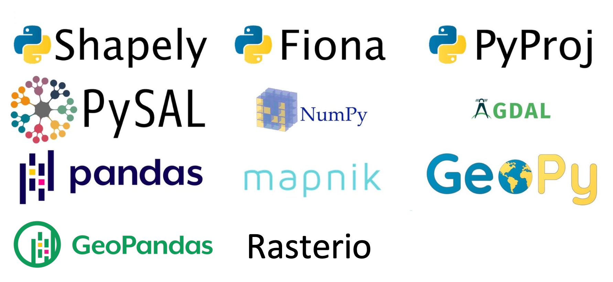
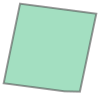
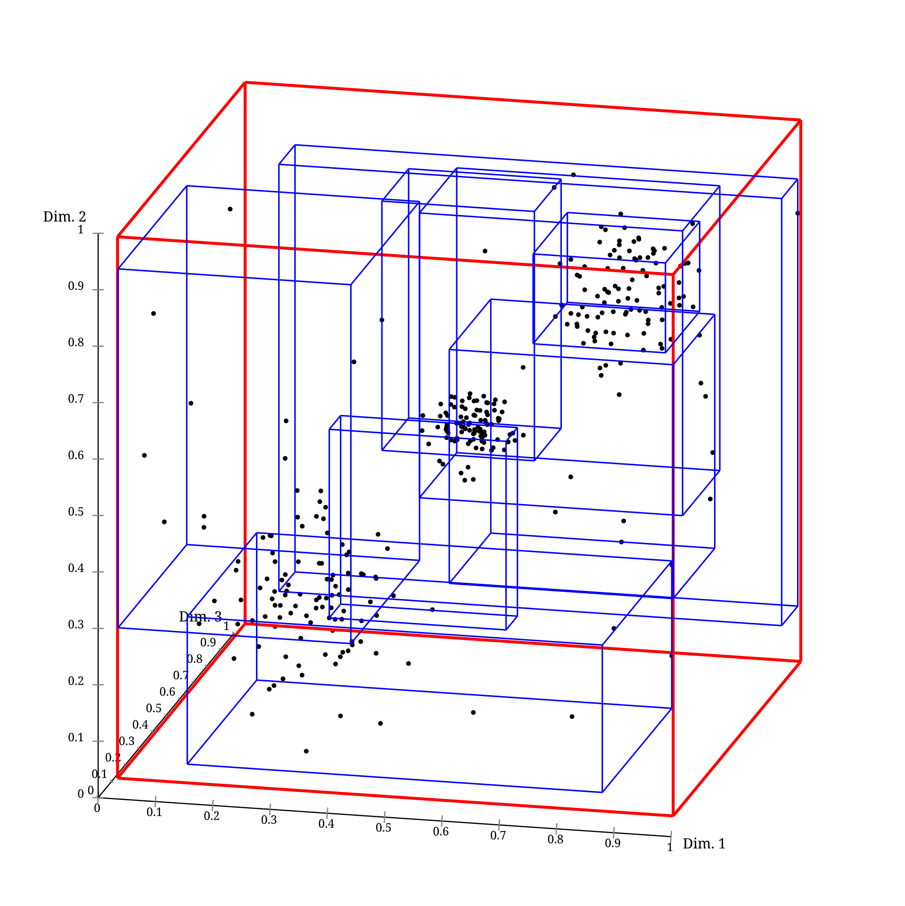
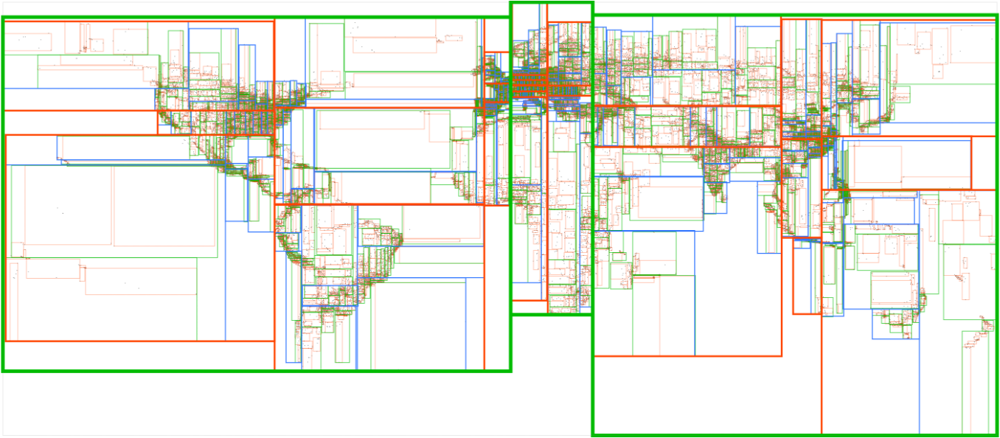
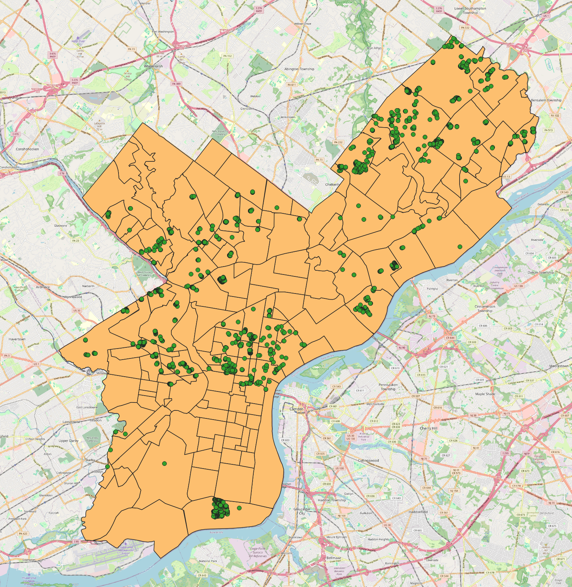
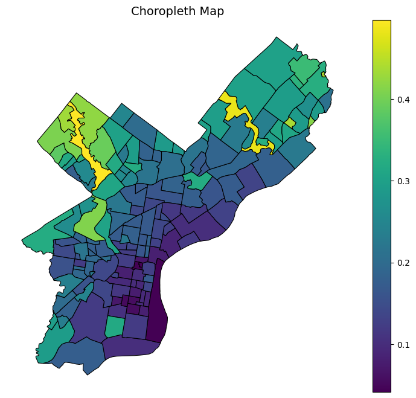

Show Code
# !pip install pyprojRequirement already satisfied: pyproj in /Users/senseablecity/anaconda3/envs/geospatial/lib/python3.9/site-packages (2.6.1.post1)# !pip install pyprojRequirement already satisfied: pyproj in /Users/senseablecity/anaconda3/envs/geospatial/lib/python3.9/site-packages (2.6.1.post1)The following Python modules are widely used in the spatial ecosystem: 
We have already covered some of these modules in the previous weeks, such as geopandas, rasterio, and pyproj. Different modules are at different levels of the spatial data processing pipeline. For example, geopandas is a high-level library that provides a user-friendly interface for working with geospatial data, while rasterio is used for reading and writing raster data. pyproj is a library for performing coordinate transformations and projections.
You can use geopandas to read shapefiles, but it is not the only option. Also sometimes, you may find the geopandas report some weird error messages when you try to read shapefiles. This is because geopandas is built on top of Fiona and Shapely, which are lower-level libraries that provide more control over the reading and writing of shapefiles.
Here we will focus on Fiona and Shapely, which are powerful libraries for reading, writing, and manipulating shapefiles and geometric objects. More importantly, you will be able to understand the underlying mechanisms of how shapefiles are read and written, which will help you troubleshoot any issues you may encounter when working with geopandas.

Fiona is used for reading and writing vector files (here we’re using Shapefiles), while Shapely is used for doing the manipulation and analysis of the geometric objects.
# get the meta data of shapefile, such as spatial reference, field names, etc
import fiona
from fiona.crs import to_string
from shapely.geometry import mapping, shape
# you can read the shapefile as well
census_shp = 'data/zillow_neighborhoods.geojson'
with fiona.open(census_shp, 'r') as nb_lyr:
driver = nb_lyr.driver # the driver of the shapefile
schema = nb_lyr.schema #schema of shapefile
crs = nb_lyr.crs # coordinate reference system of the shapefile
meta = nb_lyr.meta # more details about the metadata of the shapefile
Read metadata, attributes, geometry of features in shapfile using fiona
Create shapefile based on the longitude and latitude
Do buffer analysis using fiona+shapely
Do intersection of point feature class and polygon feature class
Do zonal statistics using fiona+shapely+rasterio
References:
Fiona Manual, http://toblerity.org/fiona/manual.html
Shapely Manual, http://toblerity.org/shapely/manual.html
AZAVEA Research Blog, Using Shapely and Fiona to Locate High-Risk Traffic Areas, https://www.azavea.com/blog/2016/10/05/philippines-road-safety-using-shapely-fiona-locate-high-risk-traffic-areas/
Let’s take a look at what those metadata look like
print ('The driver is:', driver)
print ('The schema is:', schema)
print ('The coordinate reference system is:', crs)
print ('the metadata is:', meta)The driver is: GeoJSON
The schema is: {'properties': {'ZillowName': 'str'}, 'geometry': 'Polygon'}
The coordinate reference system is: EPSG:4326
the metadata is: {'driver': 'GeoJSON', 'schema': {'properties': {'ZillowName': 'str'}, 'geometry': 'Polygon'}, 'crs': CRS.from_epsg(4326), 'crs_wkt': 'GEOGCS["WGS 84",DATUM["WGS_1984",SPHEROID["WGS 84",6378137,298.257223563,AUTHORITY["EPSG","7030"]],AUTHORITY["EPSG","6326"]],PRIMEM["Greenwich",0,AUTHORITY["EPSG","8901"]],UNIT["degree",0.0174532925199433,AUTHORITY["EPSG","9122"]],AXIS["Latitude",NORTH],AXIS["Longitude",EAST],AUTHORITY["EPSG","4326"]]'}We can check the geometry and attribute of all features (polygons in this case) in shapefile.
with fiona.open(census_shp, 'r') as nb_lyr:
for feat in nb_lyr:
# attribute of the neighborhood features
attr = feat['properties']
name = attr['ZillowName'] #you can find other attribute based on the metadata of the shapefile
print ('The neighborhod is:', name)
# get the geometry of the polygon feature
geom = feat['geometry']
# print ('geom is:', geom)The neighborhod is: Academy Gardens
The neighborhod is: Airport
The neighborhod is: Allegheny West
The neighborhod is: Andorra
The neighborhod is: Aston Woodbridge
The neighborhod is: Bartram Village
The neighborhod is: Bella Vista
The neighborhod is: Belmont
The neighborhod is: Brewerytown
The neighborhod is: Bridesburg
The neighborhod is: Burnholme
The neighborhod is: Bustleton
The neighborhod is: Byberry
The neighborhod is: Callow Hill
The neighborhod is: Carroll Park
The neighborhod is: Cedar Park
The neighborhod is: Cedarbrook
The neighborhod is: Center City
The neighborhod is: Chestnut Hill
The neighborhod is: Chinatown
The neighborhod is: Clearview
The neighborhod is: Cobbs Creek
The neighborhod is: Crescentville
The neighborhod is: Crestmont Farms
The neighborhod is: Dearnley Park
The neighborhod is: Dickinson Narrows
The neighborhod is: Dunlap
The neighborhod is: East Falls
The neighborhod is: East Kensington
The neighborhod is: East Oak Lane
The neighborhod is: East Park
The neighborhod is: East Parkside
The neighborhod is: East Passyunk
The neighborhod is: East Poplar
The neighborhod is: Eastwick
The neighborhod is: Elmwood
The neighborhod is: Fairhill
The neighborhod is: Fairmount
The neighborhod is: Feltonville
The neighborhod is: Fern Rock
The neighborhod is: Fishtown
The neighborhod is: Fitler Square
The neighborhod is: Fox Chase
The neighborhod is: Francisville
The neighborhod is: Frankford
The neighborhod is: Franklin Mills
The neighborhod is: Franklinville
The neighborhod is: Garden Court
The neighborhod is: Germantown East
The neighborhod is: Germantown Morton
The neighborhod is: Germantown Penn Knox
The neighborhod is: Germantown Southwest
The neighborhod is: Germantown West Central
The neighborhod is: Germantown Westside
The neighborhod is: Germany Hill
The neighborhod is: Girard Estates
The neighborhod is: Glenwood
The neighborhod is: Graduate Hospital
The neighborhod is: Grays Ferry
The neighborhod is: Greenwich
The neighborhod is: Haddington
The neighborhod is: Harrowgate
The neighborhod is: Hartranft
The neighborhod is: Haverford North
The neighborhod is: Hawthorne
The neighborhod is: Holmesburg
The neighborhod is: Hunting Park
The neighborhod is: Industrial
The neighborhod is: Juniata Park
The neighborhod is: Kingesessing
The neighborhod is: Lawndale
The neighborhod is: Lexington Park
The neighborhod is: Logan
The neighborhod is: Logan Square
The neighborhod is: Lower Moyamensing
The neighborhod is: Ludlow
The neighborhod is: Manayunk
The neighborhod is: Mantua
The neighborhod is: Mayfair
The neighborhod is: McGuire
The neighborhod is: Mechanicsville
The neighborhod is: Melrose Park Gardens
The neighborhod is: Mill Creek
The neighborhod is: Millbrook
The neighborhod is: Modena
The neighborhod is: Morrell Park
The neighborhod is: Mount Airy East
The neighborhod is: Mount Airy West
The neighborhod is: Navy Yard
The neighborhod is: Newbold
The neighborhod is: Nicetown
The neighborhod is: Normandy Village
The neighborhod is: North Central
The neighborhod is: Northeast Airport
The neighborhod is: Northern Liberties
The neighborhod is: Northwood
The neighborhod is: Ogontz
The neighborhod is: Old City
The neighborhod is: Old Kensington
The neighborhod is: Olney
The neighborhod is: Overbrook
The neighborhod is: Oxford Circle
The neighborhod is: Packer Park
The neighborhod is: Parkwood Manor
The neighborhod is: Paschall
The neighborhod is: Passyunk Square
The neighborhod is: Pennsport
The neighborhod is: Pennypack
The neighborhod is: Pennypack Park
The neighborhod is: Pennypack Woods
The neighborhod is: Penrose
The neighborhod is: Point Breeze
The neighborhod is: Port Richmond
The neighborhod is: Powelton
The neighborhod is: Queen Village
The neighborhod is: Rhawnhurst
The neighborhod is: Richmond
The neighborhod is: Rittenhouse
The neighborhod is: Riverfront
The neighborhod is: Roxborough
The neighborhod is: Roxborough Park
The neighborhod is: Sharswood
The neighborhod is: Society Hill
The neighborhod is: Somerton
The neighborhod is: Southwest Schuylkill
The neighborhod is: Spring Garden
The neighborhod is: Spruce Hill
The neighborhod is: Stadium District
The neighborhod is: Stanton
The neighborhod is: Strawberry Mansion
The neighborhod is: Summerdale
The neighborhod is: Tacony
The neighborhod is: Tioga
The neighborhod is: Torresdale
The neighborhod is: University City
The neighborhod is: Upper Kensington
The neighborhod is: Upper Roxborough
The neighborhod is: Walnut Hill
The neighborhod is: Washington Square
The neighborhod is: West Kensington
The neighborhod is: West Oak Lane
The neighborhod is: West Park
The neighborhod is: West Parkside
The neighborhod is: West Passyunk
The neighborhod is: West Poplar
The neighborhod is: West Powelton
The neighborhod is: West Torresdale
The neighborhod is: Whitman
The neighborhod is: Winchester Park
The neighborhod is: Wissahickon
The neighborhod is: Wissahickon Hills
The neighborhod is: Wissahickon Park
The neighborhod is: Wissinoming
The neighborhod is: Wister
The neighborhod is: Woodland Terrace
The neighborhod is: Wynnefield
The neighborhod is: Wynnefield Heights
The neighborhod is: YorktownIf you don’t like the with statement, you can also use the following code to read the shapefile:
nb_lyr = fiona.open(census_shp, 'r')
for feat in nb_lyr:
# attribute of the neighborhood features
attr = feat['properties']
name = attr['ZillowName'] #you can find other attribute based on the metadata of the shapefile
# get the geometry of the polygon feature
geom = feat['geometry']
# print ('geom is:', geom)We can convert the dictionary geom variable into a shapely Polygon object using shapely. Here is one example of using shapely to deal with the geometry of features in shapefile.
# the shape is a function in shapely, we import "from shapely.geometry import shape"
shape(geom)
The projection is wgs84, and the unit is degree, so be careful for the buffer analysis. If you want to do buffer analysis, you need to convert the projection to a projected coordinate system, such as UTM, which uses meters as the unit. Here is a demostration of using a small number for buffer analysis.
buff_geom = shape(geom).buffer(0.001) #1 degree is a long distance
buff_geom
# mapping(shape(point['geometry']).buffer(5.0))Note Make sure your shapefile is in a projected coordinate system before you do buffer analysis. Like using the local projection with unit of feet or meters if you want to do buffer analysis.
We may want to find out which points fall within which polygons. This is a common spatial analysis task known as a point-in-polygon query. It can also apply to other geometry types, such as lines and polygons, points and lines, etc.
However, because of the huge amount of combination for seaching, it may take a long time to finish the analysis. We need to think about how to optimize the code to speed up the analysis.
For example, you want to find a book with name of “Python for Geospatial Data Science” in a library with 1 million books. If you search the book one by one, it will take a long time to finish the search. But if you search the index of the book first, it will be much faster. Similarly, for spatial analysis, we can use spatial indexing to speed up the search process.
RTree is a spatial indexing library that can be used to speed up spatial queries. It works by creating a hierarchical structure of bounding boxes that can be used to quickly eliminate large portions of the search space.


Here is a simple example of find the amount of tree points within each census tract polygon.
# !pip install rtreeThe two shapefiles are in projection of WGS84, which uses degree as the unit. You can overlay them in Desktop GIS software. But, when do the spatial analysis, you need to convert them into a projected coordinate system, such as UTM, which uses meters as the unit. Here you can reproject both of then to a local projection (epsgcode: 2272) with unit of feet or meters if you want to do buffer analysis.

The neighborhood polygon and the tree points are in the same projection, so we can do the spatial analysis directly.
import rtree
# neighborhood_map = 'data/zillow_neighborhoods.geojson'
# treesite_map = 'data/ppr_tree_canopy_points_2015.geojson'
neighborhood_map = 'data/zillow_nb.geojson'
treesite_map = 'data/tree_site.geojson'
outPolygonShp = 'data/trees_neighborhood.shp'
pnt_lyr = fiona.open(treesite_map, 'r')
# create an empty spatial index object
index = rtree.index.Index()# populate the spatial index, the polygon features
i = 0
for fid, feature in pnt_lyr.items():
i = i + 1
if i % 1000 == 0: print (i)
geometry = shape(feature['geometry'])
# add a buffer in order to create a r-tree
geometry_buffered = geometry.buffer(0.0001) # buffer 0.0001 degree, about 11 meters
geotype = feature['geometry']['type']
index.insert(fid, geometry_buffered.bounds)
100001000
200010000There are two steps to do the overlay analysis, step 1. using the rtree index to find the candidate points that may fall within the polygon; step 2. using shapely to check if the candidate points really fall within the polygon.
# loop all polygons and assign GVI values
with fiona.open(neighborhood_map, 'r') as polygon_lyr:
schema = polygon_lyr.schema.copy()
schema['properties']['tree_num']='int'
input_crs = polygon_lyr.crs
# write the intersected point into the new shapefile
with fiona.open(outPolygonShp, 'w', 'ESRI Shapefile', schema, input_crs) as output:
# loop the polygon feature
for idx, featPoly in enumerate(polygon_lyr):
if idx % 100 == 0:
print('Polygon:', idx)
geomPoly = shape(featPoly['geometry'])
attriPoly = featPoly['properties']
# using the bounding box to find the close but may not intersected point feature
fids = [int(i) for i in index.intersection(geomPoly.bounds)]
# print("i have narrowed down to ", len(fids))
# count the number of accidents
count = 0
# loop all features in bounding box and then judge if they are intersected
for fid in fids:
featPnt = pnt_lyr[fid]
geomPnt = shape(featPnt['geometry'])
# if the point is intersected with the polygon, then save the point feature into the output shapefile
if geomPoly.contains(geomPnt): #intersect
count = count + 1
attriPoly['tree_num']=count
output.write({'geometry': mapping(geomPoly),'properties': attriPoly})Polygon: 0
Polygon: 100/var/folders/7g/px0llbj54z37p076r6853ggh0000gn/T/ipykernel_83312/4118696468.py:34: FionaDeprecationWarning: instances of this class -- CRS, geometry, and feature objects -- will become immutable in fiona version 2.0
attriPoly['tree_num']=countWe have discussed about using the zonalstats to do the zonal statistics in Week-5B. Here we will demonstrate how to do the zonal statistics using geopandas and rasterio. You will have more control of the process using this method.
You will need to prepare the raster data and the shapefile. Also, make sure they are in the same projection. It is easier to reproject the shapefile match with the raster data, because the raster data is usually large and it is time consuming to reproject the raster data.
import geopandas as gpd
# Read the GeoJSON
neighborhood_map = 'data/zillow_nb.geojson'
gdf = gpd.read_file(neighborhood_map)
# Check the current CRS
print(gdf.crs)
# Reproject to EPSG:32618 to match with the raster data
gdf_utm = gdf.to_crs(epsg=32618)EPSG:2272Here we will loop through each polygon in the shapefile, and for each polygon, we will mask the raster data using the polygon, and then calculate the statistics of the masked raster data. Different from the zonalstats module, you will be able to control the statistics you want to calculate, such as mean, median, min, max, std, etc.
import geopandas as gpd
import rasterio
from rasterio.mask import mask
import numpy as np
def calculate_NDVI(nir, red):
"""
Calculate the NDVI from the NIR and red landsat bands
"""
# Convert to floats
nir = nir.astype(float)
red = red.astype(float)
# Get valid entries
check = np.logical_and(red.mask == False, nir.mask == False)
# Where the check is True, return the NDVI, else return NaN
ndvi = np.where(check, (nir - red) / (nir + red), np.nan)
# Return
return ndvi
# 2. Open raster
results = []
with rasterio.open("data/landsat8_philly.tif") as src:
for geom in gdf_utm.geometry:
# Mask Red (band 4) and NIR (band 5)
masked, mask_transform = mask(
dataset=src, # The original raster data
shapes=[geom], # The vector geometry we want to crop by
crop=True, # Optional: remove pixels not within boundary
all_touched=True, # Optional: get all pixels that touch the boudnary
filled=False, # Optional: do not fill cropped pixels with a default value
)
# Note that the indexing here is zero-based, e.g., band 1 is index 0
red = masked[3]
nir = masked[4]
ndvi = calculate_NDVI(nir, red)
# red, _ = rasterio.mask.mask(src, [geom], crop=True, indexes=4)
# nir, _ = rasterio.mask.mask(src, [geom], crop=True, indexes=5)
# red = red.astype(float)
# nir = nir.astype(float)
# # Mask out nodata
# if src.nodata is not None:
# red[red == src.nodata] = np.nan
# nir[nir == src.nodata] = np.nan
# # NDVI formula (add small epsilon to avoid /0)
# ndvi = (nir - red) / (nir + red + 1e-6)
# Flatten and drop NaNs
ndvi = ndvi[np.isfinite(ndvi)]
# Compute stats
if ndvi.size > 0:
mean_val = float(ndvi.mean())
min_val = float(ndvi.min())
max_val = float(ndvi.max())
else:
mean_val = min_val = max_val = None
results.append({
"ndvi_mean": mean_val,
"ndvi_min": min_val,
"ndvi_max": max_val
})
# 3. Attach results safely
res_gdf = gpd.GeoDataFrame(results, index=gdf_utm.index)
# Drop old cols if they already exist (prevents overlap error)
for col in res_gdf.columns:
if col in gdf_utm.columns:
gdf_utm = gdf_utm.drop(columns=col)
# Merge results
gdf_utm = gdf_utm.join(res_gdf)
print(gdf_utm.head()) ZillowName geometry \
0 Academy Gardens POLYGON ((500127.271 4434899.076, 500464.133 4...
1 Airport POLYGON ((483133.506 4415847.15, 483228.716 44...
2 Allegheny West POLYGON ((485837.663 4428133.6, 485834.655 442...
3 Andorra POLYGON ((480844.652 4435202.29, 480737.832 44...
4 Aston Woodbridge POLYGON ((499266.779 4433715.944, 499265.975 4...
ndvi_mean ndvi_min ndvi_max
0 0.311035 0.018471 0.582076
1 0.176434 -0.170573 0.654791
2 0.221690 -0.055709 0.623701
3 0.431367 0.038368 0.596069
4 0.312406 0.029139 0.568488 from matplotlib import pyplot as plt
# Get max value for scaling
max_val = gdf_utm["ndvi_mean"].max()
min_val = gdf_utm["ndvi_mean"].min()
# Plot choropleth
ax = gdf_utm.plot(
column="ndvi_mean", # column to color by
cmap="viridis", # colormap
linewidth=0.8,
edgecolor="black",
legend=True,
vmin=min_val, # minimum for color scale
vmax=max_val, # maximum for color scale
figsize=(10, 8)
)
plt.title("Choropleth Map", fontsize=14)
plt.axis("off")
plt.show()